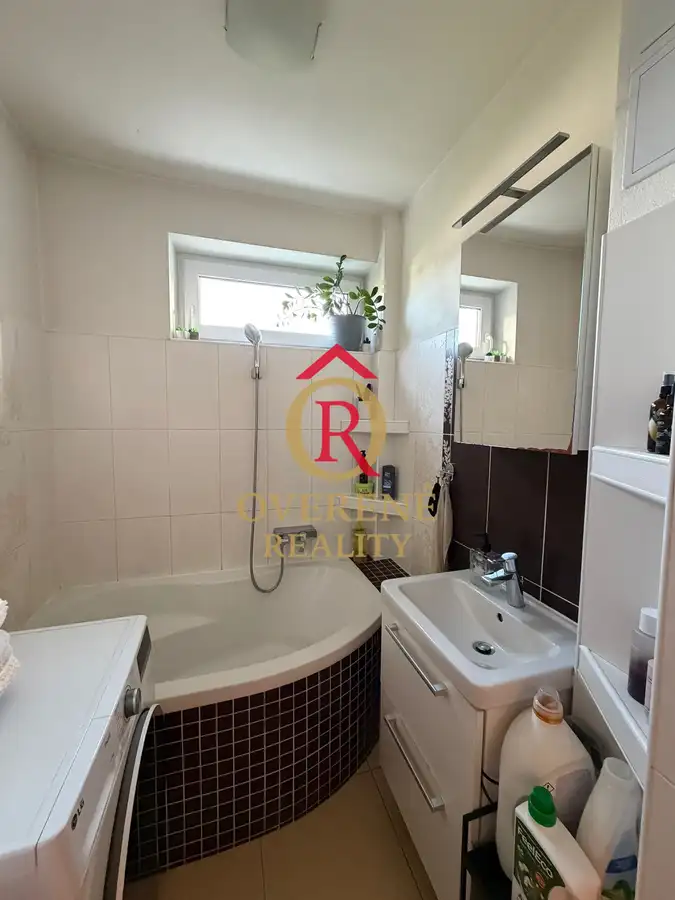
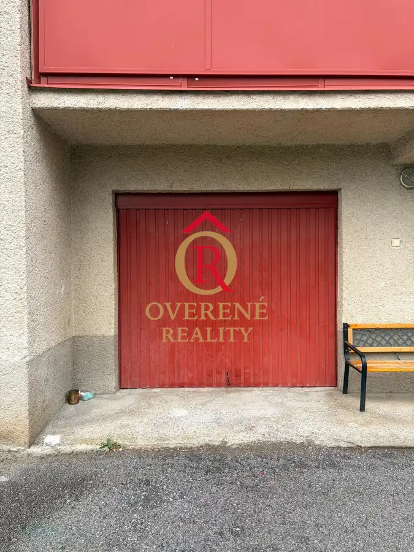

Na predaj 4izbový byt pod lesom - Banská Bystrica/Čerín 4B008LS
Čerín


- Dispozícia4-izbový
- Plocha85 m²
- Poschodie1. z 2
- StavKompletná rekonštrukcia
O nehnuteľnosti
!!! Znížená cena !!!OVERENÉ REALITY vám ponúkajú exkluzívne na predaj veľký 4 izbový priestranný byt pod lesom v tichej časti dediny Čerín . Byt má veľké 3 izby plus halu prepojenú s kuchyňou. Kuchyňa obsahuje spotrebiče umývačku riadu, sklokeramickú dosku a elektrickú rúru. Toaleta je oddelená od kúpelne, nachádza sa pri vchode do bytu .v Byte ostávajú vstavané skrine. Súčasťou bytu je aj pivnica, veľká prázdna technická miestnosť ( bývalá kotolňa) a tiež odkladací priestor na povale bytovky. Byt je prerobený, plastové okná sú menené v roku 2025.Byt sa nachádza na konci dediny pod lesom. Čerín je vzdialený cca 15 minút cesty autom od Banskej Bystrici a tiež od mesta Zvolen a Sliač.Neváhajte nás kontaktovať pre bližšie informácie a dohodnite si obhliadku ešte dnes!Pre viac informácií a dohodnutie obhliadky nás kontaktujte na tel. čísle 0905941180 alebo e-mailom na smelkova@overenereality.sk .V CENE JE UŽ ZAHRNUTÝ AJ KOMPLETNÝ PRÁVNY SERVIS, VYPRACOVANIE ZMLUVY, POPLATKY SPOJENÉ S PREVODOM VLASTNÍCKYCH PRÁV.
Parametre
- Cena vrátane energií
- Nie
- Druh
- 4 izbový byt
- Dátum zverejnenia
- 17. 06. 2026
- Energetický certifikát budovy
- nie je
- Podlažie
- 1
- Počet nadzemných podlaží
- 2
- Stav nehnuteľnosti
- Kompletná rekonštrukcia
- Typ
- Predaj
- Typ konštrukcie
- Tehlová
- Vybavenie
- Garáž
- Úžitková plocha
- 85 m²